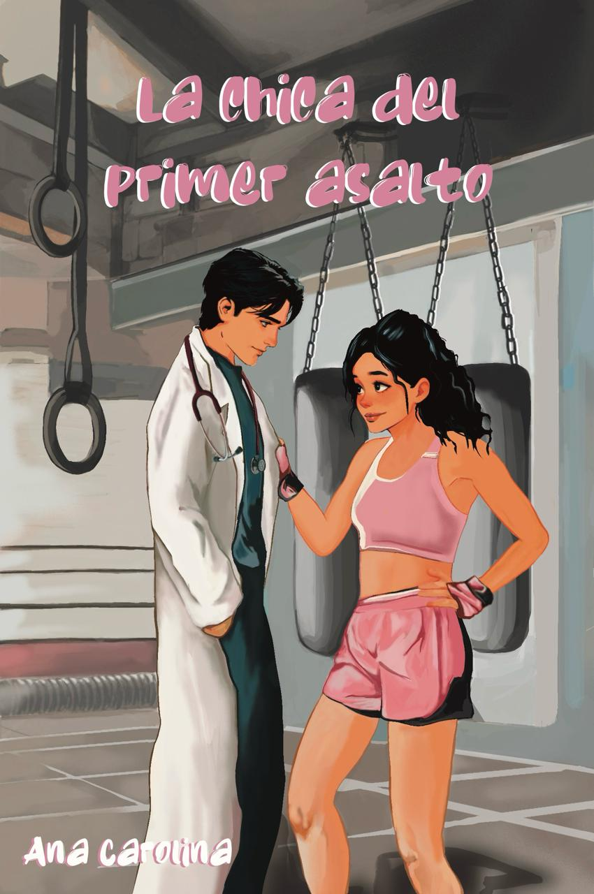

Mis Libros
YO ANTES Y DESPUÉS DE TI

Valkiria está rota.Ya no es la misma de antes, aunque a ojos de los demás se pone una máscara para esconder sus cicatrices detrás de tatuajes y tulipanes. Pero Gabriel, el escort de lujo del que se ha enganchado hasta llevarla casi a la ruina, sí las ve, y a base de sexo e intensas charlas intentará arreglarla... Ninguno de los dos estaban preparados para la vuelta de Felipe a España después de ocho años en Estados Unidos y todo lo que va a remover su llegada. Un corazón roto. Un ángel sin alas. Un error del pasado que lo cambia todo.
PREVENTALA CHICA DEL PRIMER ASALTO
A sus veintiún años, Clara está a punto de convertirse en campeona de España en la categoría superwélter. Entrena sin descanso, su mayor sueño… representar España en las Olimpiadas de Francia. A su lado está Rubén, su hermano mayor y exboxeador, que dejó el ring por razones que aún no es capaz de superar. Y decide dedicarse por completo a la pequeña. Enric, un Cartetí de 36 años, neurólogo, no ha tenido ninguna relación sentimental, para no enfrentarse a las heridas que dejó una relación rota, y que continúan atormentándole. Lo último que espera es que una joven boxeadora irrumpa en su vida en lo que pensó que solo sería una noche. Sueños, pasado que pesan, encuentros que pueden cambiarlo todo…
COMPRAR AHORA¿Y si no, nos hubiéramos conocido por casualidad?

Vicky deja atrás su hogar para mudarse a Madrid con su mejor amiga, con el sueño de estudiar fotografía. Sin embargo, sus planes de convertirse en una fotógrafa de éxito no salen como siempre había imaginado...
Compra ahora¿Y si volviéramos a vernos por casualidad?

Vicky nunca imaginó que construiría una vida con Tae y Aera a su lado, casi perfecta, cercana a lo que muchos consideran una familia modelo, en Corea del Sur...
Compra ahora